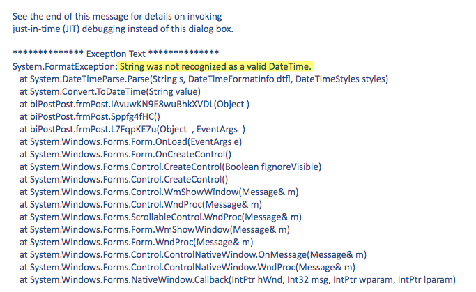

Troubleshooting¶
When you use manual sync and it is completed successfully, the following dialog appears.

If you face any errors, try looking here.
Check Log¶
After you make a sync, you are able to check on you PC the compressed file uploaded.
-
Open a new Windows Explorer window and enter
%LocalAppData%\biPost -
Open corresponding ZIP file and review contents.
It might me also useful to check after a Sync Completed process, and before you press OK, open %LocalAppData%\biPost and check the files that were just created.
If you need to check which files where loaded to Aurora, check aurora_s3_load_history.
customData.json syntax error¶
Misspelled fields or tables on customData.json may appear as:

Date format inside post.json¶
If immediately after launching biPost.exe this error appears String was not recognized as valid DateTime, try the following:
Open post.json file and delete all datetime strings found inside " ". Do not delete the double quotation marks.

No information to Sync¶
If No information to Sync message appears, verify that customData.json is set to send at least one table.
Time to sync and load to Aurora¶
When a new Sync is initiated on biPost.exe, it may take a few minutes to extract, compress and upload to information to S3. While this is happening, no messages/icons will show that biPost.exe is working and maybe you will see (Not responding) on the top of the window, this is normal.
If you launch Windows Task Manager probably you'll see that biPost.exe *32 is running and consuming a considerable amount of CPU.
Once the compressed package it uploaded to S3, it may take 1 to 3 minutes to process and load your data to MySQL.
If you need to check which tables where loaded, check aurora_s3_load_history.
Upload Limit¶
Depending on the number of columns on each table and the amount of data of each row, it is possible that a large amount of data sent on a single sync may not load on your Aurora DB.
We have tested different scenarios and a 100,000 row limit for a single sync works fine.
We recommend using Recursive Sync for large tables that have a datetime field available.
Special Characters¶
Some special characters on char and varchar fields are not supported and thus removed by biPost.exe
For example:
- Enter
- ()
On SQL Server, all special characters on strings of 100 length or more are removed, leaving only letters and numbers.
Schema Limitations¶
NULLvalues on char and varchar are converted to''on MySQL.NULLvalues on float, money and int datatypes are converted to value0(zero) on MySQL.NULLvalues on datetime are converted to0000-00-00 00:00:00on MySQL.bitdatatype is converted toVARCHAR(1)on MySQL.- Tables without a
PRIMARY KEYwill not load data on Aurora.
No Internet Connection¶
If there is no internet connection available, biPost will show the following message:

Firewall Restrictions¶
If your internet connection has a firewall, it may show different errors like:
- The remote name could not be resolved.
- A WebException with status SendFailure was thrown.
- A WebException with status NameResolutionFailure was thrown.
- Error making request with Error Code ExpectationFailed and Http Status Code ExpectationFailed.

Grant Firewall to reach Amazon S3:¶
Create a policy to Allow to:
54.230.0.0/1552.192.0.0/11

AppData\Local folder¶
Sometimes it is necessary to manually delete the content of \AppData\Local\biPost folder.
Open a new Windows Explorer window and enter %LocalAppData%\biPost. Select all and delete.
************** Exception Text **************
System.IO.IOException: The process cannot access the file '012a3b4c-56d7-8ef9-0123-456789a012bc_post.zip' because it is being used by another process.